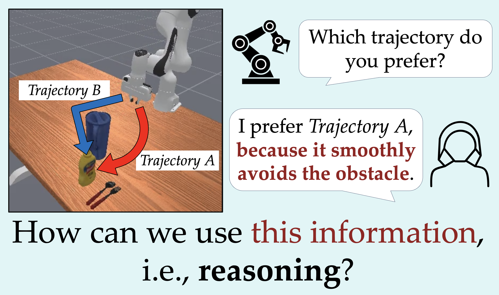
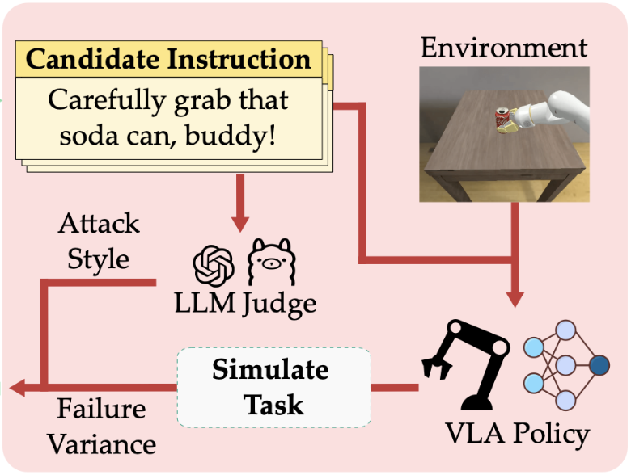
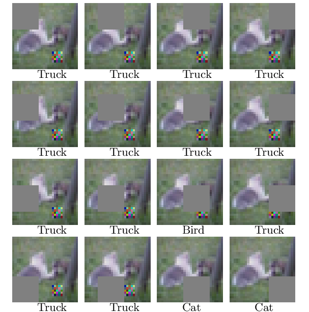

minjuneh at usc dot edu
Hello! I am a second year PhD Student at USC, where I am advised by Prof. Daniel Seita and closely working with Prof. Erdem Bıyık.
I received a MSCS degree at Stanford, where I worked on robot learning research with Prof. Fei-Fei Li and Prof. Jiajun Wu. Prior to that I completed my undergraduate studies at UC Berkeley, majoring in CS & Statistics.
Previously, I was an Applied Scientist Intern at Amazon Robotics's Scanless Tech, where I developed an efficient algorithm that eliminates the need for explicit scanning, with Dr. Frank Preiswerk. I have also interned in Microsoft Research and Apple (SPG) to solve various problems in robotics.
Resume / GitHub / LinkedIn / Google Scholar
I am interested in developing algorithms that can empower robots that to learn from humans and help daily tasks. My research explores two key, interrelated directions:
- Learing from Human Feedback: Designing effective algorithms that can reflect a user's true preference and finetuning pretrained policies with various forms of feedback (e.g., demonstrations, preferences, etc) to continuously adapt to user needs.
- Data-Efficient Policy Learning: Developing methods to train robotic policies in low-data regimes to minimize human effort (e.g., data curation and augmentation) for robust and generalizable policy learning.
In doing so, I am interested in leveraging natural language. Language is a powerful medium for human-robot interaction, essential for clear specification, grounded human-in-the-loop learning, and distilling complex human knowledge into a transferable form.
|  |
Minjune Hwang, Yigit Korkmaz, Daniel Seita†, Erdem Bıyık† Under Review, 2025 HiTL Workshop @ RSS 2025 (Oral) poster PbRL is widely used for shaping agent behavior to match a user's preference, yet its sparse binary feedback makes it vulnerable to causal confusion. We introduce ReCouPLe, a lightweight framework that uses natural language rationales to clarify true causal signals behind preference and to improve generalization, by employing orthogonal decomposition. |
|  |
Siddharth Srikanth, Freddie Liang, Ya-Chuan Hsu, Varun Bhatt, Shihan Zhao, Henry Chen, Minjune Hwang, Akanksha Saran, Daniel Seita, Aaquib Tabrez, Stefanos Nikolaidis Under Review, 2025 We present Q-DIG, a novel red-teaming framework for generating diverse task instructions that induce failures in SoTA Vision-Language-Action models using Quality Diversity. We then provide a methodology to leverage these failure modes to improve policies. |
|
|
Fangyu Wu, Dequan Wang, Minjune Hwang, Chenhui Hao, Jiawei Lu, Jiamu Zhang, Christopher Chou, Trevor Darrell, Alexandre Bayen ICRA 2025 PAL Workshop @ ICRA 2020 (Oral) arXiv | code We introduce Berkeley DeepDrive Drone (B3D) dataset, a novel traffic dataset and modeling framework tailored to study motion planning in understructured environments. In this project, I was in charge of the object detection and tracking framework for constructing the dataset. |

|
Ruohan Zhang*, Sharon Lee*, Minjune Hwang*, Ayano Hiranaka*, Chen Wang, Wensi Ai, Jin Jie Ryan Tan, Shreya Gupta, Yilun Hao, Gabrael Levine, Ruohan Gao, Anthony Norcia, Li Fei-Fei, Jiajun Wu CoRL 2023 CRL Workshop @ CoRL 2023 (Oral) paper | project page NOIR is a general-purpose BRI system that enables humans to command robots to perform everyday activities with their brain signals. Here, I designed a hierarchical EEG decoding system with parameterized skills, as well as a few-shot imitation learning algorithm. |

|
Minjune Hwang*, Ayano Hiranaka*, Sharon Lee, Chen Wang, Li Fei-Fei, Jiajun Wu, Ruohan Zhang IROS 2023 arXiv | project page | poster We introduce SEED, an RLHF algorithm that leverages primitive skills to enable more safe and sample efficient long-horizon task learning. I mainly designed the hierarchical RLHF algorithm and led simulation experiments. |

|
Michael Lingelbach, Chengshu Li, Minjune Hwang, Andrey Kurenkov, Alan Lou, Roberto Martin-Martin, Ruohan Zhang, Li Fei-Fei, Jiajun Wu ICRA 2023 arXiv | github We propose a novel solution to object navigation tasks based on a scene graph representation, that combines graph neural networks and task-driven attention for better scalability and learning efficiency. I empirically designed the task-driven graph attention and verified its efficacy in simulation environments. |

|
Chengshu Li, Cem Gokmen, Gabrael Levine, Roberto Martin-Martin, Sanjana Srivastava, Chen Wang, Josiah Wong, Ruohan Zhang, Michael Lingelbach, Jiankai Sun, Mona Anvari, Minjune Hwang, Manasi Sharma, Arman Aydin, Dhruva Bansal, Samuel Hunter, Kyu-Young Kim, Alan Lou, Caleb R Matthews, Ivan Villa-Renteria, Jerry Huayang Tang, Claire Tang, Fei Xia, Silvio Savarese, Hyowon Gweon, Karen Liu, Jiajun Wu, Li Fei-Fei CoRL 2022 (Best Paper Nomination; Oral) arXiv | project page | github BEHAVIOR-1K is a benchmark for embodied AI and robotics research with realistic simulation of 1,000 diverse household activities grounded in human needs. As a core developer, I developed generalizable robot kinematic modules and controllers, as well as a foundational library of primitive skills for mobile manipulation. |
|  |
Michael McCoyd, Won Park, Steven Chen, Neil Shah, Ryan Roggenkemper, Minjune Hwang, Jason Xinyu Liu, David Wagner ACNS 2020 SiMLA @ ACNS 2020 (Best Paper Award) arXiv | github We propose a defense against patch attacks based on partially occluding the image around each candidate patch location, so that a few occlusions each completely hide the patch. I mainly developed the sparsity-invariant CNNs for adversarial attack detection via occlusion. |

|
Alicia Yi-Ting Tsai*, Selim Gunay*, Minjune Hwang*, Chenglong Li*, Pengyuan Zhai*, Laurent El Ghaoui, Khalid M.Mosalam AI + HADR @ NeurIPS 2020 (Spotlight) arXiv | project page | github We develop a text analytics framework to extract information from social media data for disaster response. I mainly designed the text analytics framework which used sparse convex optimization and NLP methods. |